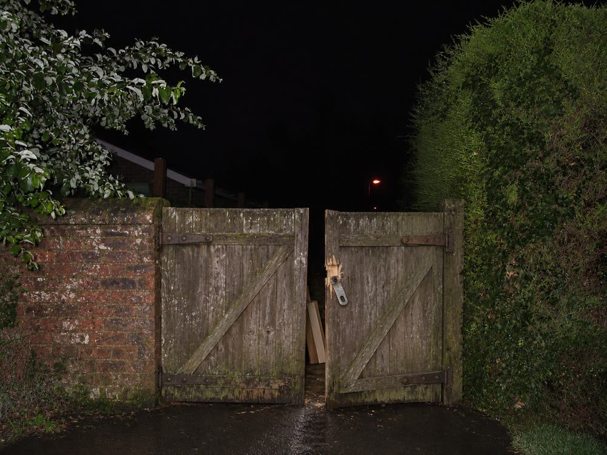

The witness who was never there
Hollin Joinery on Tanner's Row in Larkhaven burned on the night of 14 March 2026, and 41 people gave statements. The bookkeeper, Mara Quill, has one of the plainest alibis: she was at her sister's house in Brindle Cross, 34 km away, from six until past midnight, and her sister says she came.
Fictional case of a fire under investigation. Every person, business and place in it is invented.

The story
Mara gave the police a photograph of the workshop gate, pried open, to show an earlier break-in. An examiner copied its details from her phone onto an exhibit sheet: taken at the gate at 21:52 on the night of the fire. A second sheet records a voice note she sent her sister at 22:07.
In the voice note Mara says she is still at the yard on Tanner's Row. Her own exhibits put her at the workshop while her statement puts her 34 km away.
- 0:00Jo, it's me.
- 0:02Start without me, I'm still at the yard on Tanner's Row.
- 0:06Something's come up with the books.
- 0:08I'll be with you by half eleven.
What it shows
- Reading scans, a photograph and a voice note
- Search by what a picture shows
- The linker, and people seen together
- The contradiction finder, by the clock
- A colleague checks the lead
- A conclusion that names the account it contradicts
The pile
53 sources: 40 witness statements, one interview and twelve other items, among them the photograph, the voice note and the examiner's two sheets. Four of the papers are scanned pages. The app reads all of it itself.
Day by day
The fire and the first statements
- Arrives
- 18 sources: the fire report, the first statements and the records the police already hold.
- The app
- Reads each one and proposes its people, places and dates, with a first pass: what the item is, a title and a short description.
- A person
- Confirms the fire report's first pass.
Mara Quill's statement, on paper
- Arrives
- 31 more sources, two of them scanned pages. Mara says she was at her sister's in Brindle Cross from six; her sister Jo says she came.
- The app
- Reads the scans and writes each place with its time and in whose words.
The photograph of the gate
- Arrives
- The photograph Mara says shows an earlier break-in.
- The app
- Reads where and when the phone took it from the file itself and says what the picture shows, so a search for "gate" finds it.
The phone exhibits and the voice note
- Arrives
- An examiner's two exhibit sheets from Mara's phone, one for the photograph and one for a voice note she sent her sister, and the voice note itself.
- The app
- Transcribes the voice note on its own server and reads the dated places in the sheets: Tanner's Row at 21:52 and at 22:07. It heard "Joe" for "Jo" and marks that name as heard, not written.
One woman in four papers
- The app
- Proposes that the Mara Quill of the two exhibit sheets is one person. It also notes people placed at one spot as seen together, such as the two Quill sisters.
- A person
- Accepts the link. Her statement and her sister's share only her name with the sheets, so no rule proposes them; the analyst joins the four papers herself.
Two places on one night
- The app
- Sets Mara's places on 14 March side by side by the clock. Her own evening in Brindle Cross, from six to midnight, overlaps 21:52 and 22:07 on Tanner's Row, 34 km away. Her sister's "about half past eleven" leaves time for the drive after 22:07, so it does not count against her. The app proposes; nothing is decided.
A colleague checks the lead
- A person
- Assigns the two exhibit sheets to a colleague and asks her to check the voice note's place against the sheet. The colleague answers on the claim and marks her work updated.
The conclusion
- A person
- Reads the times, checks each sheet against the picture and the recording, and decides the alibi does not hold. She writes the conclusion and signs it; a second analyst agrees.
The conclusion
Mara Quill was at the yard on Tanner's Row on the evening of 14 March 2026, not in Brindle Cross from six as her statement says.
- Confidence
- Reasonable grounds to believe. Enough consistent, reliable information that an ordinary careful person would believe it.
- Rests on
- The two exhibit sheets: the photograph taken at the back gate at 21:52, and the voice note sent from the yard at 22:07.
- Contradicts
- Her own statement that she was in Brindle Cross from six, as the app read it from the scan. It is cited as what she said, not accepted.
- Set aside
- She was at her sister's house in Brindle Cross from about six. Her sister says she arrived late, about half past eleven, and the voice note sent from her phone at 22:07 says she is still at the yard.
- The photograph is the one she took of the forced gate early on 13 March, as she said. Its embedded metadata dates it 14 March 2026 at 21:52 and places it at the back gate.
- Not established
- Who started the fire.
- Why she was at the yard that evening.
- Peer review
- Signed by one analyst and agreed by a second.
The score
All 4 planted contradictions found.
The alibi fails twice, against the photograph and against the voice note, and the app puts both in one proposal. It also found a witness whose two birth years disagree, 1958 against 1965, and another whose two places of birth disagree. It raised none of the five planted look-alikes, such as Tanner's Row written without its apostrophe, or a last sighting at noon and an arrest that afternoon. With the rules alone and in one live trial, it left alone Jo at the market at 09:40 and at home that evening, because it compares times.
Measured on 22 November 2026 on this synthetic case, with the rules alone and in one live trial on a zero-retention model route. Reading the papers, the app recovered 148 of the 152 planted claims. A test in the source pins the result.
The limit
On what the app read itself, the market still comes up. It read Jo's "all evening" at home without a time, so it raises the market with "same day, times not stated", and a person has to dismiss it. The app also reads the time stored in the photograph, but treats it as a fact about the phone, not about Mara, and it does not read the time of the voice note's file. The times that place her come from the examiner's two sheets, which a person checks against the picture and the recording.
From finding to court
Every approval in the app is a passkey signature by a named person, and every decision can be undone in the open. A signed finding leaves in a sealed package. Anyone handed that package, a court included, can check offline that not one word changed since it was signed, without trusting you or us.
The other cases
Credits
Gate photograph. Edited: a real photograph, altered. Commons file: File:Alley at Night - geograph.org.uk - 670479.jpg (source), by Ajay Tegala, from geograph.org.uk, licensed CC BY-SA 2.0, taken 2002-08-04. Altered: the metal path barrier was replaced by a timber double gate in a brick wall, one leaf open, its hasp pried off and timber offcuts behind it, with an image generation model. The sky, hedges, flash light and street lamp come from the original. The original's location (Burwell, Cambridgeshire) is not the scene. Resized for this page. This altered picture is shared under the same licence, CC BY-SA 2.0, with the credit above plus "altered".

Voice note. Generated: a synthetic voice (OpenAI gpt-audio, voice "shimmer", through OpenRouter) reading the four lines above. No real person's voice.